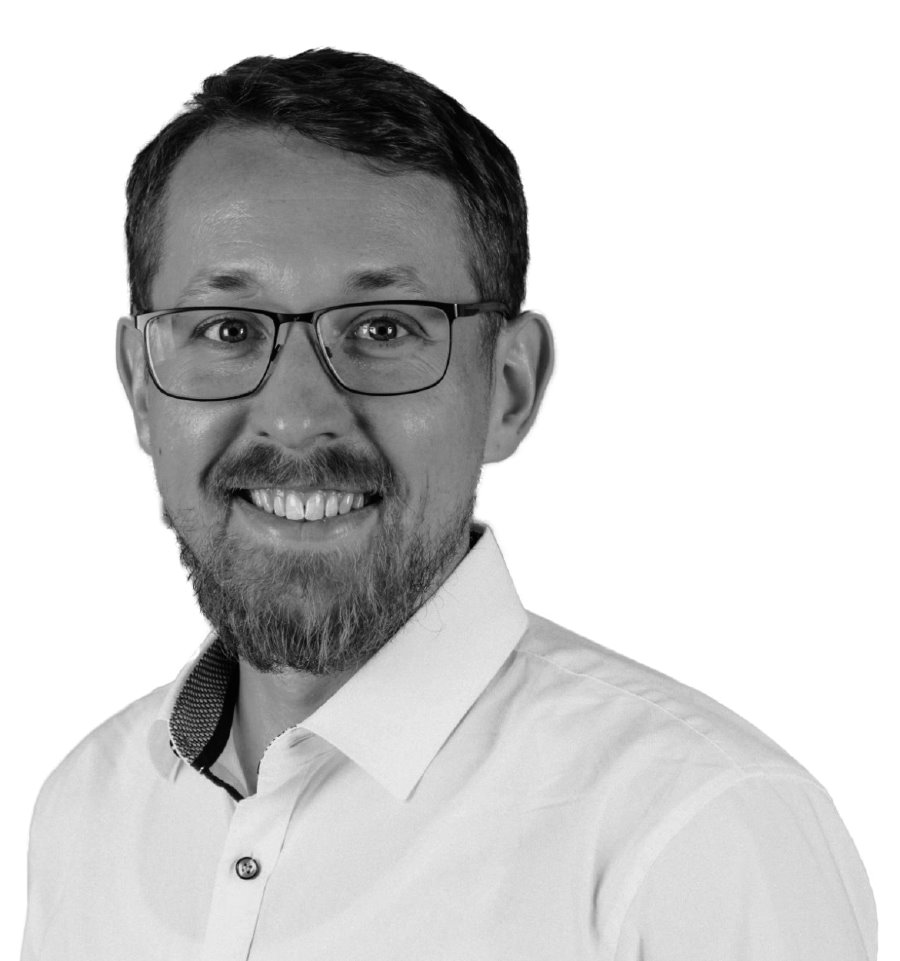

Hallo.
Willkommen auf meiner persönlichen Webseite.
Ich bin Viktor Klassen – Biomedical Engineer und Kinderbuchautor.
Schön, dass du vorbeischaust! Hier erfährst du mehr über mich, meine Leidenschaften und meine Erfahrungen.
Über mich

Neugierig auf Menschen, begeistert von Ideen und immer offen für neue Perspektiven.
Ich bin Familienmensch, Genussmensch, Teamplayer und Autor. Mich faszinieren ehrliche Beziehungen, offene Gespräche und die Energie, die entsteht, wenn Menschen gemeinsam etwas bewegen. Beruflich interessieren mich besonders das Gesundheitswesen, die Medizintechnik und die Frage, wie Forschung und Innovation unser Leben verändern können. Erfahrungen in Südafrika haben meinen Blick auf die Welt um weitere Perspektiven bereichert.
Ich liebe es, kreativ zu sein, Neues auszuprobieren und Geschichten zu schreiben, die nach Abenteuer schmecken. Wenn ich von etwas überzeugt bin, arbeite ich fokussiert, mit Leidenschaft und dem Anspruch, die Extrameile zu gehen.
Was mich antreibt, ist die Verbindung aus Neugier, Menschlichkeit und dem Wunsch, Dinge aktiv mitzugestalten.
- Name
- Viktor Klassen
- Wohnort
- Blankenfelde, Brandenburg
- Sprachen
- Deutsch (Muttersprache), Englisch (verhandlungssicher)
- Schwerpunkte
- Biomedical Engineer, Autor, Ophthalmologie, Beatmungs- und Schlaftherapie
Akademischer Werdegang
„Wenn wir Bildung erlangt haben, was machen wir dann damit?“
-
2015 – 2017
Universität Stellenbosch, Südafrika | Mechatronik und Maschinenbau
-
2011 – 2015
Hochschule Hamm-Lippstadt
Beruflicher Werdegang
„Der beste Weg, die Zukunft vorherzusagen, ist, sie zu gestalten.“
-
04.2024 – heute
Medana GmbH
-
08.2023
Westfalen Medical, Berlin/Brandenburg
-
05.2020
Linde Gas Therapeutics GmbH, Berlin/Brandenburg
-
06.2019
Linde Gas Therapeutics GmbH, Berlin/Brandenburg
-
03.2018
Linde Gas Therapeutics GmbH, Ludwigsfelde
Hobbys und Engagement
„Arbeit und Vergnügen sollten sich abwechseln – gemeinsam erfüllen sie unser Leben mit Freude.“
-
Tennis
-
Kreatives Schreiben
-
Laufen
-
Sonntagsschularbeit
Autor
„Jede große Geschichte beginnt vielleicht mit einem einzigen Bild in unserer Vorstellung.“
-
2026
Kinderbuch · BoD-Verlag
-
2027
In Vorbereitung
Kontakt
Für Fragen, Anfragen oder einen Austausch freue ich mich über eine Nachricht.